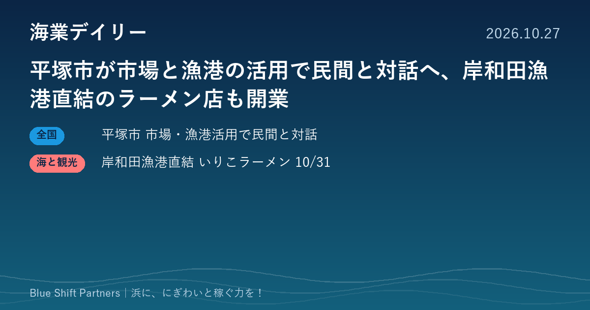

2026.10.27
平塚市が市場と漁港の活用で民間と対話へ、岸和田漁港直結のラーメン店も開業

神奈川県平塚市は、水産物地方卸売市場の民設民営化に向けて、市場と漁港の活用について民間事業者との対話（サウンディング調査）を行います。大阪府の岸和田漁港では、漁業者の会社が運営するいりこラーメンの店が10月31日に開業します。
平塚市、水産物地方卸売市場とひらつかタマ三郎漁港の活用でサウンディング調査
神奈川県平塚市は、施設の老朽化や柔軟な事業展開の必要から、平塚市水産物地方卸売市場の民設民営市場への移行を検討しています。その一環として、市場とひらつかタマ三郎漁港（須賀港・新港）を対象に、用地の活用、新港の活用可能性、事業スキームなどについて民間事業者と対話するサウンディング調査を行います。参加表明書の提出は11月4日（水）17時まで、ヒアリングシートの提出は11月11日（水）17時までで、対話は11月16日から20日に行われます。
ここがポイント：市場の建て替えを、漁港の活用と一体で民間の知恵を聞きながら考える進め方です。首都圏の浜で、水産と食や観光を組み合わせた事業を考える事業者にとっては、構想段階から関われる機会になります。
出典：平塚市「平塚市水産物地方卸売市場の再整備等に係るサウンディング調査を実施します」（2026-10-15）
岸和田漁港直結のいりこラーメン店「IRIKO」が10月31日に開業
大阪府岸和田市の岸和田漁港に直結したラーメン店「IRIKO（イリコ）」が、10月31日（土）に開業します。運営は恵比寿丸フーズ株式会社で、自分たちで獲った魚を使ったいりこのラーメンを打ち出しています。営業時間は平日が昼と夜の2部制、土日祝は11時から20時までで、12月までは定休日を設けないとしています。発表は千葉県一宮町のEllange株式会社によるものです。
ここがポイント：漁業者自身が獲った魚を、漁港のすぐそばで料理として出す取り組みです。いりこのような加工品を飲食につなげて浜に人を呼ぶ形は、各地の漁港での6次産業化や海業の参考になります。
出典：Ellange株式会社（PR TIMES）「大阪の海の恵みを、一杯のラーメンに。」（2026-10-23）
市場の建て替えも、漁港直結の飲食店も、浜の魚を「どこで、どう価値に変えるか」を問い直す動きです。施設をつくる側と、そこで商いをする側が早い段階で話し合えるかどうかが、にぎわいと稼ぐ力を両立させる鍵になります。